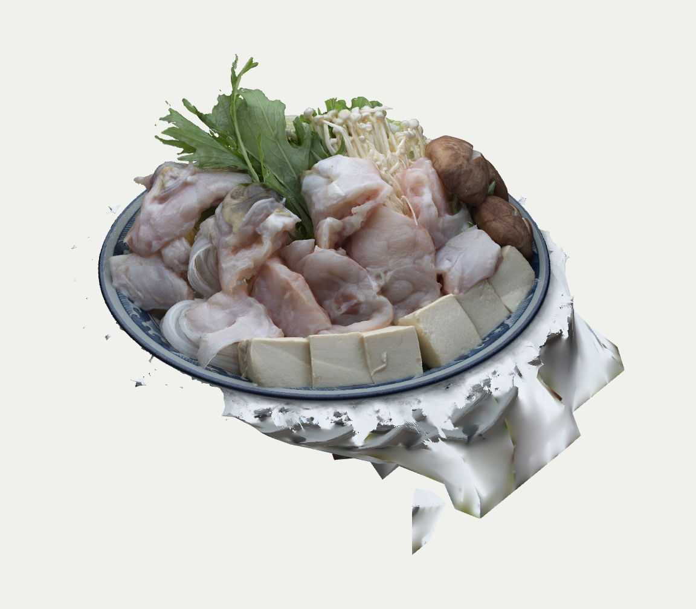

深廣 ／ High Detail
とらふぐ鍋セットツヤの全体比較
色付け直後
追加のツヤなし
材質適用後
ふぐは中、ほかの具材は弱
全体像を読み込み中…
画像を左右にドラッグすると、両方の向きが30°ずつ切り替わります。2倍表示では、見たい場所をクリックすると左右が同じ位置に寄ります。
ツヤを加えた範囲
- 中 粗さ 0.40
ふぐの身・皮付きのふぐ
- 弱 粗さ 0.62
白菜、にんじん、豆腐、水菜、えのき、椎茸、玉ねぎ
- 色付け直後のまま
器など、ツヤの追加対象から外した面
具材の境界は自動推定です。「適用範囲」で白いふぐと豆腐、皮と椎茸などの割り当てを確認できます。